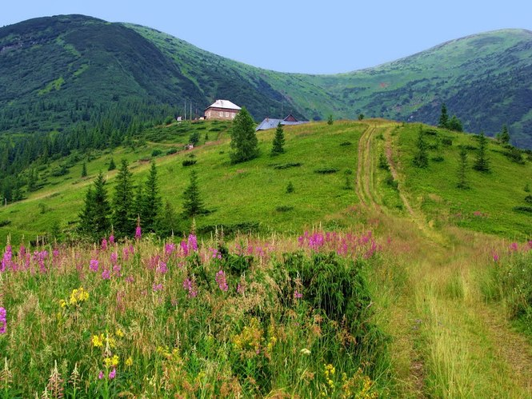
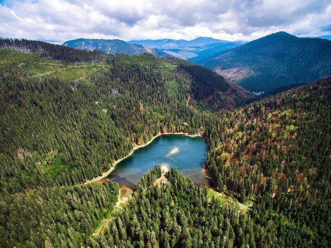

Захоплюючі і мальовничі Карпати України!
Мальовничі Карпати - це величні гори, густі ліси, красиві озера, цілющі трави, п'янке повітря ... В цьому унікальному регіоні України зосереджено стільки дивовижних місць, що на відвідування навіть невеликої частини з них забракне не однієї відпустки.
 Різноманіття Карпат пояснюється цікавою історією, багатою природою, своєрідною культурою місцевих жителів, дивним переплетенням національних традицій і самобутніх звичаїв, властивих цьому регіону.
Коли вперше приїжджаєш сюди, складається враження, що ти потрапив у минуле. У горах багато чого збережено в первозданному вигляді, і це випромінює чистоту та енергію.
Автори онлайн-видання The Spark зібрали для нас декілька цікавих фактів про українські Карпати, які вам буде цікаво дізнатися.
- Найбільш високогірний населений пункт в Карпатах - село Випчина, розташоване на висоті 1100 м над рівнем моря.
- Найбільш високогірне місто - Рахів . Місто знаходиться на висоті 820 м над рівнем моря. Перепад висот між самою і високою і найнижчою вулицями міста становить 400 м.
- Найглибша лікарня знаходиться в місті Солотвино. На глибині від 206 до 282 м нижче рівня моря знаходяться соляні палати для лікування хворих на бронхіальну астму.
- Найбільш високогірний готель Карпат розташований на висоті 930 м над рівнем моря - це готель «Беркут» на Яблуницькому перевалі.
- Найдовшим музичним інструментом не тільки Карпат, а й усього світу вважається трембіта. Довжина трембіти становить 4 м, а її звук чути навіть на відстані 10 км.
- Найбільш високогірна водойма - озеро Синевир, що розташувалося на висоті 989 м над рівнем моря.
- Найбільша долина нарцисів знаходиться недалеко від міста Хуст. Площа цього унікального природного комплексу становить 80 га.
- Найвище розташована спортивна споруда - тренувальна база Драгобрат – вона побудована на висоті 1450 метрів над рівнем моря.
Відпочинок в Карпатах об'єднує три напрямки:
- оздоровлення на рекреаційних природних джерелах;
- активний екотуризм, піші сходження до гірських озер, водоспадів, вершин;
- культурно-історичні екскурсії, розширюють кругозір і поглиблюють розуміння історичних подій.
Перший напрям
Пов'язаний з путівками в санаторії, бази відпочинку та постійним проживання в готелях, що пропонують послуги з оздоровлення.
Другий напрямок
Передбачає придбання різних короткострокових турів з ночівлею в різних готелях, розташованих по шляху проходження групи.
Останній напрям
Це екскурсії по старовинних пам'яткам, музеям, замкам, з можливістю вивчати архітектуру стародавніх міст, історія яких налічує більше тисячі років.